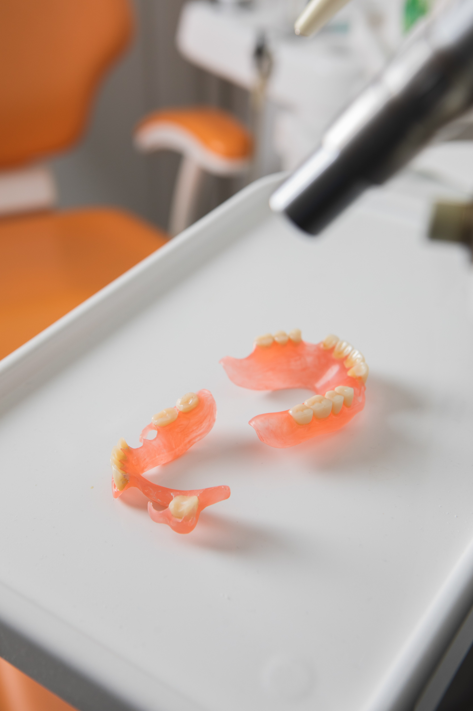
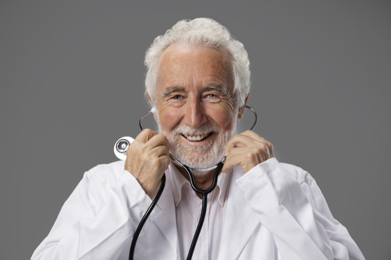

Protezy elastyczne Poznan
- Strona glowna
- Protezy elastyczne
Masz dosc niewygodnej protezy? Poznaj komfortowe rozwiazanie bez metalowych klamer
Czy Twoja obecna proteza uwiera, jest ciezka lub krepuja Cie widoczne metalowe elementy? Czy masz trudnosci z jedzeniem i czujesz sie nieswojo podczas rozmow? Protezy elastyczne sa odpowiedzia na te wszystkie problemy. To nowoczesne rozwiazanie, ktore jest lekkie, niewidoczne i idealnie dopasowane. Mozesz znow jesc, smiac sie i zyc swobodnie.



Czym sa protezy elastyczne (akronowe)?
Sa to protezy wykonane z nowoczesnego, termoplastycznego materialu (Acron), ktory jest jednoczesnie elastyczny i bardzo wytrzymaly. W przeciwienstwie do tradycyjnych protez akrylowych, nie posiadaja one sztywnych, metalowych elementow mocujacych.
Dzieki swojej elastycznosci, protezy akronowe doskonale przylegaja do dziasel, zapewniajac komfort noszenia i dyskrecje. Klamry sa wykonane z tego samego materialu co baza protezy, dzieki czemu sa praktycznie niewidoczne.
Kluczowe zalety protez z Acronu - komfort i pewnosc siebie na co dzien
Idealna Estetyka - usmiech bez widocznego metalu
Elastyczne, rozowe klamry idealnie wtapiaja sie w dziasla, stajac sie praktycznie niewidoczne. Przeziernosc materialu imituje naturalna tkanke. To rozwiazanie dla osob, dla ktorych dyskrecja jest najwazniejsza.
Niezrownany Komfort - lekkosc i perfekcyjne dopasowanie
Protezy te sa ciensze i znacznie lejsze od tradycyjnych, co ulatwia adaptacje. Elastycznosc materialu zapewnia idealne przyleganie bez uciskania. Pacjenci czesto zapominaja, ze maja proteze w ustach.
Zdrowie i Bezpieczenstwo - material w pelni biokompatybilny
Acron nie zawiera substancji uczulajacych (monomerow), nie powoduje reakcji alergicznych i nie podraznia blony sluzowej jamy ustnej. Idealny wybor dla alergikow i osob z wrazliwymi dziaslami.
Wyjatkowa Trwalosc - odpornosc na pekniecia i uszkodzenia
"Elastyczne" nie znaczy "slabe". Wrec przeciwnie - elastycznosc materialu sprawia, ze jest on bardzo odporny na zlamania przy upadku. To inwestycja na lata.
Dla kogo proteza elastyczna to najlepszy wybor?
- Dla osob, ktore cenia sobie najwyzszy komfort i dyskrecje
- Dla pacjentow z alergia na metal i inne skladniki tradycyjnych protez
- Dla osob, u ktorych warunki w jamie ustnej utrudniaja wykonanie klasycznej protezy
- Jako doskonala alternatywa dla protez szkieletowych
- Dla osob aktywnych, ktore chca normalnie jesc i rozmawiac
Jak powstaje Twoja nowa, idealnie dopasowana proteza? (Proces krok po kroku)
Bezplatna konsultacja i planowanie
Rozmowa, ocena stanu jamy ustnej i przedstawienie mozliwosci. Bez zobowiazan.
Pobranie precyzyjnych wyciskow
W naszej pracowni, bezbolesnie. Wyciski to podstawa idealnego dopasowania.
Przymiarki i indywidualne dopasowanie
Sprawdzamy estetykę i zgryz, aby wszystko bylo idealnie.
Odbior gotowej protezy i instruktaz
Pacjent otrzymuje idealnie dopasowana proteze i wskazowki dotyczace jej pielegnacji.
Gwarancja jakosci - Certyfikat ROKO dla kazdej protezy acronowej
Kazda wykonana u nas proteza z Acronu posiada oryginalny certyfikat jakosci ROKO z hologramem. To daje pacjentowi pewnosc, ze otrzymuje produkt najwyzszej klasy, wykonany z bezpiecznego i sprawdzonego materialu.
Certyfikat ROKO
Chcesz dowiedziec sie, czy proteza elastyczna jest dla Ciebie?
Porozmawiajmy bez zobowiazan. Podczas bezplatnej konsultacji odpowiem na wszystkie Twoje pytania i sprawdzimy, czy to najlepsze rozwiazanie w Twoim przypadku.
Umow bezplatna konsultacje w Poznaniu